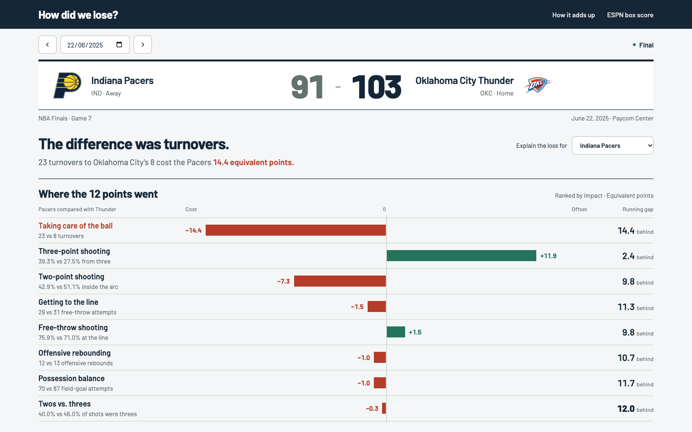

Pacers 91–103 Thunder · 2025 Finals, Game 7 · Real box-score data

A compact score strip leads into a wide point-impact chart. Each row shows the factor and its contribution to the running deficit.
These are visual design studies. Dates and team controls illustrate the layout; the underlying game is held constant for comparison. Point impacts are equivalent-point estimates, not possession-level causal measurements.